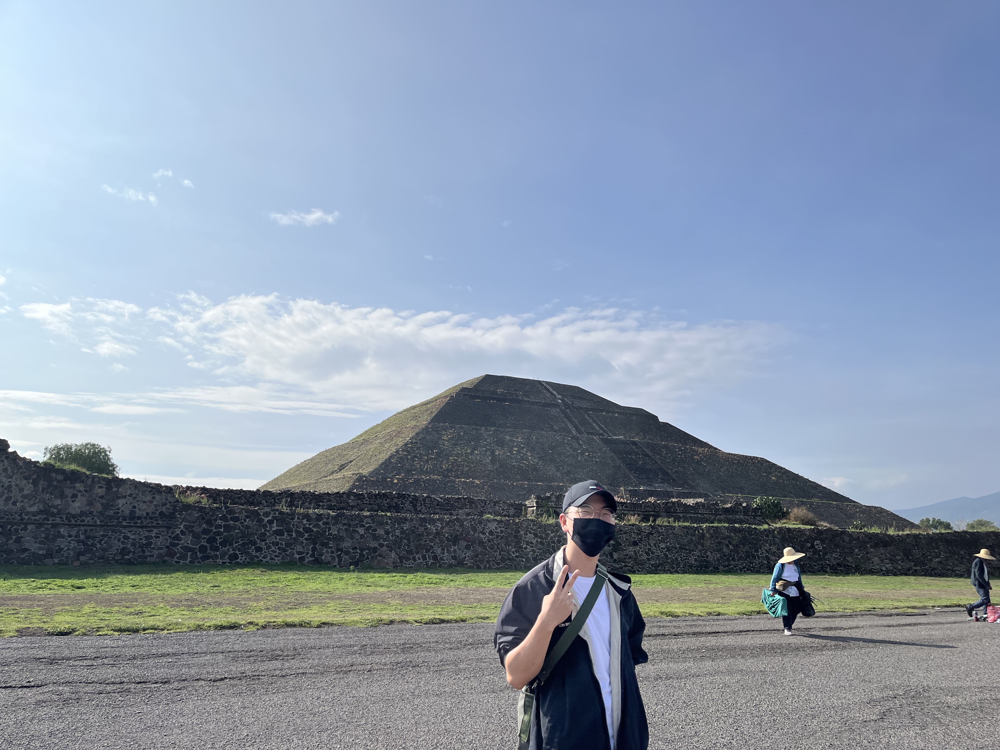

Gideon Kwon

Hello world! My name is Gideon! My real name in Korean is Giseok,
but for convinience I prefer Gideon.
Here are some basic background information about me.
I am from Ilsan, South Korea which is a city right next to Seoul.
I was born in May 1998, so I am 25 years old. I will be turning 26 this year.
I served my mission in Melbourne Australia. Now I am a sophomore in computer science.
I love cooking, working out, listening to good music, and watching anime